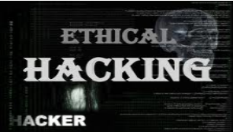

Types of Hacking
- Website hacking
- Network hacking
- Ethical hacking
- Email Hacking
- Online banking hacking
- Computer hacking
Website hacking
Hacking a website means taking control from the website owner to a person who hacks the website.
Network Hacking
Network Hacking is generally means gathering information about domain by using tools like Telnet, Ns look UP, Ping, Tracert, Netstat, etc… over the network.
Ethical Hacking
Ethical hacking is where a person hacks to find weaknesses in a system and then usually patches them..
Email Hacking
Email hacking is illicit access to an email account or email correspondence.
Password Hacking
Password Hacking Password cracking is the process of recovering secret passwords from data that has been stored in or transmitted by a computer system.
Online Banking Hacking
Online banking Hacking Unauthorized accessing bank accounts without knowing the password or without permission of account holder is known as Online banking hacking.
Computer Hacking
Computer Hacking is when files on your computer are viewed, created, or edited without your authorization.